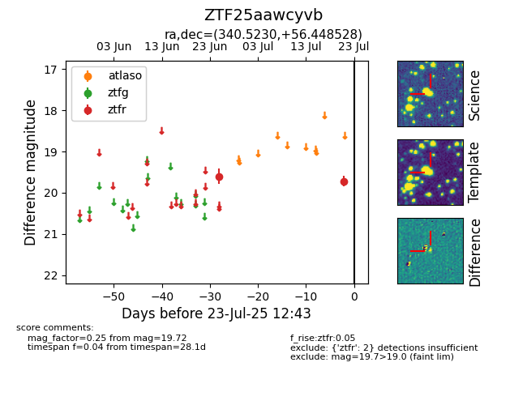

Target ZTF25aawcyvb at 2025-07-23 12:43, see:
FINK: fink-portal.org/ZTF25aawcyvb
Lasair: lasair-ztf.lsst.ac.uk/objects/ZTF25aawcyvb
ALeRCE: alerce.online/object/ZTF25aawcyvb
alt names
ZTF25aawcyvb (ztf,fink)
coordinates:
equatorial (ra, dec) = (340.5230,+56.44853)
galactic (l, b) = (105.7256,-2.03964)
photometry
last ztfr=19.72
2 ztfr detections
